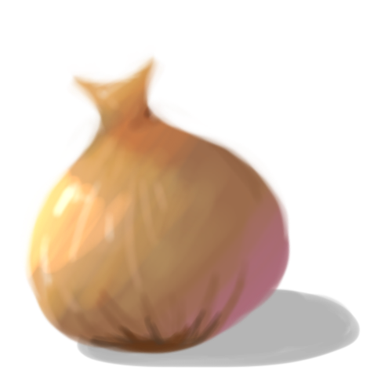

Bienvenue sur le site web du projet S2 du groupe Epicala Studio !
A l’Epita, tous les étudiants de première année passent par une étape incontournable : le projet S2. A travers ce site, vous pourrez embarquer avec nous dans cette aventure pleine de rebondissements et suivre notre chemin de réalisation !
C’est nous ! Un groupe de quatre étudiants motivés plongés dans cette quête mythologique. Comme vous allez le découvrir au cours de ces pages, l’équipe a évolué, mais notre état d’esprit est resté le même. Vous trouverez sur ce site l’historique de notre groupe ainsi qu’une présentation des membres.
Nous avons choisi de créer un jeu vidéo : Mystic Origin ! Il s’agit d’un RPG narratif basé sur le thème de la mythologie. Pour plus de détails, rendez-vous à la page suivante !
